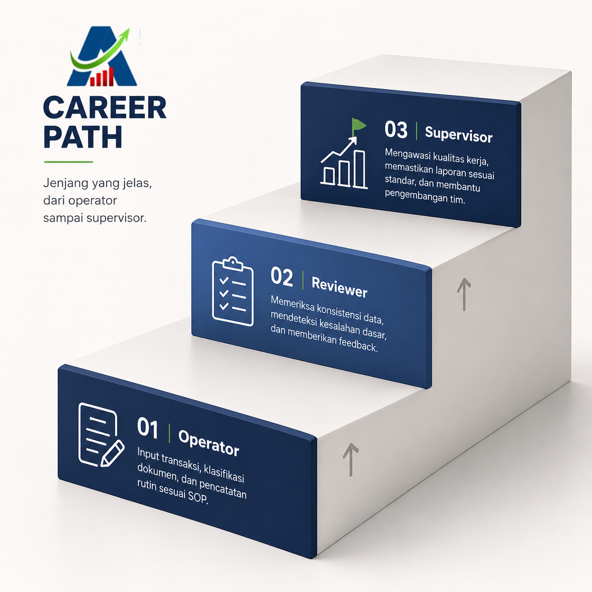
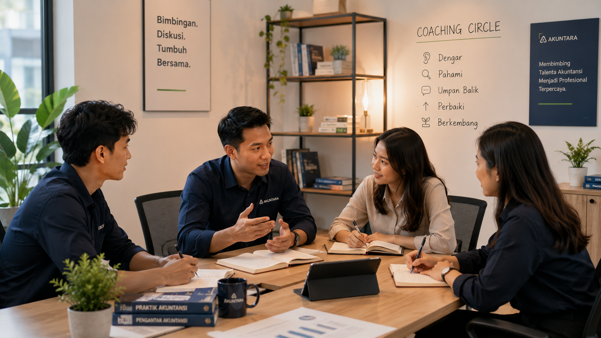
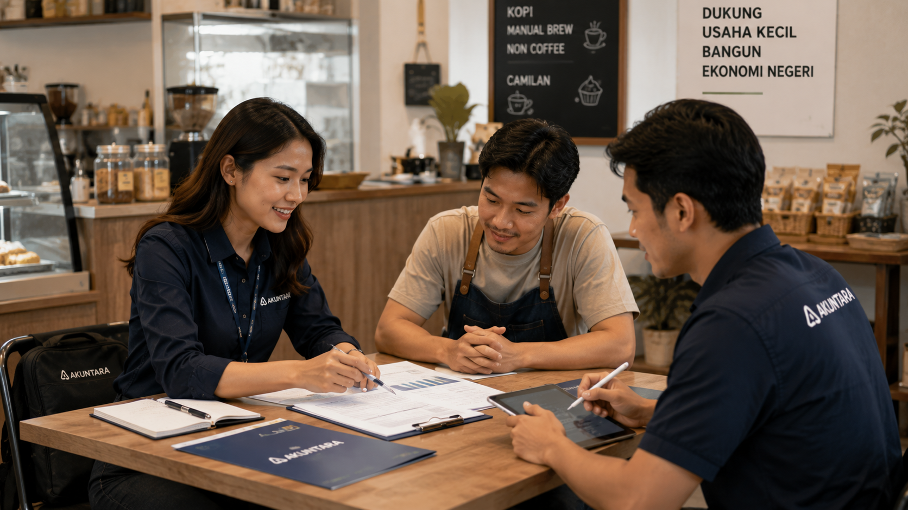
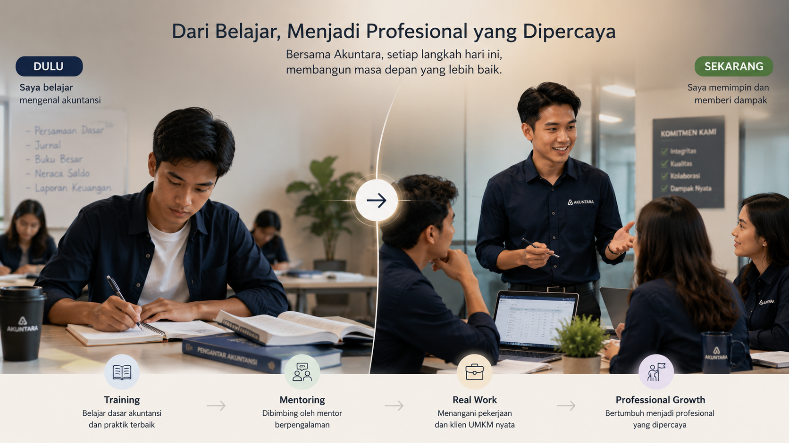

Mulai perjalanan sebagai talenta akuntansi digital bersama Akuntara.
Akuntara membuka ruang belajar kerja nyata bagi siswa SMK Akuntansi, fresh graduate, dan junior accountant melalui training, mentoring, SOP, reviewer, dan supervisi profesional.
Talenta muda yang ingin belajar dari kebutuhan nyata UMKM Indonesia.
Siswa SMK Akuntansi
Belajar proses kerja digital dan mendapatkan gambaran pekerjaan akuntansi modern.
Fresh Graduate
Mengasah kemampuan pencatatan, komunikasi, dan penyusunan laporan dengan standar kerja.
Junior Accountant
Membangun portofolio dan naik jenjang menuju reviewer atau supervisor.
Talent tidak berjalan sendiri. Ada proses belajar, verifikasi, dan pendampingan.
Akuntara menjaga kualitas layanan UMKM sekaligus membantu talent bertumbuh melalui tahapan pembelajaran, evaluasi, mentoring, dan supervisi sebelum aktif menangani pekerjaan.
Daftar
Talent mengisi profil, latar belakang pendidikan, dan minat pengembangan.
Verifikasi
Tim Akuntara memeriksa data, kesiapan awal, dan kesesuaian jalur.
Training
Talent mempelajari SOP, dokumen bisnis, dan pencatatan digital.
Tes Kemampuan
Akuntara mengevaluasi ketelitian, pemahaman dasar, dan disiplin proses.
Aktif
Talent mulai sebagai operator dengan mentoring dan supervisi.
Jenjang yang jelas, dari operator sampai supervisor.
Akuntara menyiapkan proses pembelajaran yang terhubung dengan pekerjaan nyata, bukan hanya teori.

Operator
Membantu input transaksi, klasifikasi dokumen, dan pencatatan rutin sesuai SOP.
Reviewer
Memeriksa konsistensi data, mendeteksi kesalahan dasar, dan memberikan feedback ke operator.
Supervisor
Mengawasi kualitas kerja, memastikan laporan sesuai standar, dan membantu pengembangan tim.
Operator, reviewer, dan supervisor dalam satu jalur pengembangan.
Yang dibangun bukan hanya skill teknis, tetapi disiplin kerja profesional.
Training
Materi pencatatan digital, pemahaman dokumen, dan SOP kerja Akuntara.
Mentoring
Bimbingan dari reviewer dan supervisor untuk meningkatkan akurasi kerja.

Real Work
Kesempatan mengenal pekerjaan nyata dari kebutuhan UMKM berbagai industri.

Professional Growth
Jalur perkembangan kompetensi yang bisa diarahkan ke posisi lebih senior.

Kemampuan yang tumbuh dari pekerjaan nyata, feedback, dan quality control.
Memahami alur debit-kredit, jurnal, dan klasifikasi transaksi UMKM.
Mencocokkan dokumen, rekening, dan data transaksi secara teliti.
Mengenal invoice, bukti bayar, pembelian, penjualan, dan dokumen pajak.
Bekerja mengikuti standar proses agar hasil mudah direview dan diaudit.
Belajar memberi update, menerima feedback, dan menjaga kerahasiaan data.
Siap memulai perjalanan bersama ekosistem Akuntara?
Daftar dulu, ikuti verifikasi, lalu masuk ke proses training, mentoring, dan seleksi yang terarah.